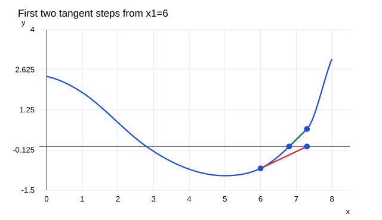

문제 요약
그림에서 x₁=6으로 오른쪽 근 s를 찾는다. (a)접선으로 x₂,x₃를 추정하고 (b)x₁=8이 더 나은지 설명하라.

힌트. 정의와 주어진 조건을 식으로 옮겨 단계별로 계산한다.
해설.
\(x_{n+1}=x_n-{f(x_n)\over f^{\prime}(x_n)}\)
x=6의 접선이 가로축과 만나는 점은 약7.3,그곳의 접선은 약6.8에서 축과 만난다.
8은 근 오른쪽의 위로 오목한 부분에 있어 접선 절편들이 근의 오른쪽에서 가까워진다. 6에서의 비교적 작은 기울기 때문에 생기는 첫 과대 이동을 피한다.
최종 답. (a)x₂≈7.3,x₃≈6.8; (b)예.
검산·주의점. 초기값·분모의 도함수·정의역을 확인하고 수렴값을 원래 방정식에 대입한다. 모든 근을 요구하면 근의 개수도 별도로 확인한다.
Problem summary
For the supplied graph,start at x₁=6 to find the right root s.(a)Draw Newton tangents and estimate x₂,x₃.(b)Would x₁=8 be better?
Hint. Translate the definitions and conditions into equations, then work through them.
Solution.
\(x_{n+1}=x_n-{f(x_n)\over f^{\prime}(x_n)}\)
The tangent at6 meets the axis near7.3;the next tangent meets it near6.8.
At8 the point is on the concave-up branch to the right of the root,so tangent intercepts approach from that side.This avoids the initial overshoot caused by the smaller slope at6.
Final answer. (a)x₂≈7.3,x₃≈6.8;(b)Yes.
Check and conditions. Check the starting value,derivative denominator,and domain.Substitute the limit into the original equation;when all roots are requested,verify their count separately.